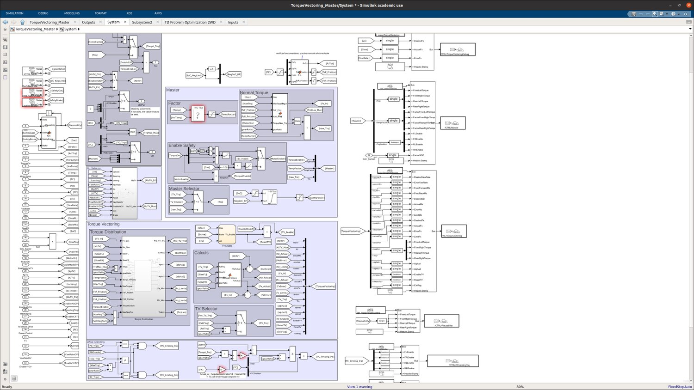
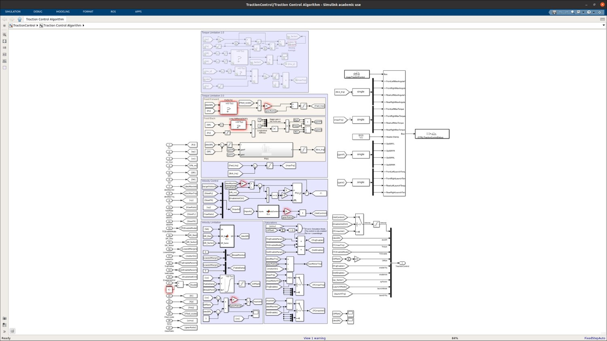

Fig. 1 — Simulink torque-vectoring / management & slip-based traction control.
P1 Low-level control
Control Algorithms for an AWD Electric Race Car
BCN eMotorsport · Vehicle Controls Engineer · 2023–2025
Consolidated and extended the low-level control stack of an AWD electric race car — torque distribution, wheel-slip control and long-term maintainability across seasons.
Torque-vectoring in MATLAB/Simulink using vehicle-state feedback and yaw-moment distribution (RWD & AWD); traction control as a slip-detection layer; motor controllers deployed in C++/ROS over CAN; regenerative braking coordination; IPG-validated and iteratively tuned with recorded telemetry.
Outcome: a maintainable, documented control baseline built for tuning over redevelopment — contributing to −1.0 s acceleration and −0.1 s skidpad, alongside 1st in the Driverless Cup (FS Spain '24) and 16th overall (FS Germany '25).
C++ROSMATLABSimulinkIPG CarMakerCAN